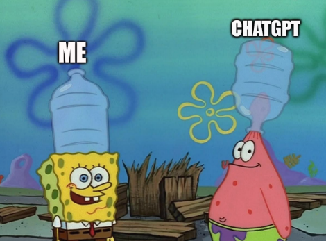

My blockchain security journey - part 1
The subject is mainly solidity and EVM but it applies to any code base for the most part of this blogpost.
Where It All Started
I was doing a CTF with my school CTF team, the GCC CTF.
There was a blockchain category that no one solved in the team so I decided to give it try.
And I absolutely flopped.

I didn’t even know what a wallet was …
There were only solidity challenges, and I first found the language pretty straightforward to understand. The most weird part was understanding the concept of contract, constructor and other stuff.
However I had some idea to solve a challenge, but there were a gap between what I had in head and how to apply it. In cryptography I have got sagemath, pycryptodome and pwntools. But for web3 I had no idea. And I was too lazy to check blogs, writeups or ask chatGPT (free version btw so it is as dumb as me).

After reading some writeups, it turns out it is not really different :
| Solidity challenge | Crypto challenge |
|---|---|
| RPC server | TCP server |
| foundry, web3.py, web3.js | pwntools, socket |
| python script, smart contract, javascript | python script |
| “Contract is ERC20 {}” | cipher = AES.new(key, mode) |
We still had zero flags in the category after the CTF, BUT, I was very hungry for knowledge so I started to grind on solidity and smart contracts.
How I started to learn
So after the CTF, I read somes writeups and tried to solve on my side. I then learn about Remix, about RPCs, ABI, about EVMs and more.
I directly noticed that I needed many prior knowledge in EVM, of how works the smart contracts and how I can interact with it. The solidity docs helped a lot with that to just have picture of what are transactons, blocks, storage, gas and more.
I then continued by doing CTFs on some wargames : rootme, hackthebox.
Then I heard that there are platfomrs made to learn like nodeguardians. I would also recommend cryptozombies for beginners.
What I have missed while learning
A mistake I’ve made is to not be curious about the blockchain ecosystem. All I wanted to do is to solve ctf challenges.
The different cryptocurrencies, the most known, how do they work, how are they different from bitcoin, what is a DEX, what is a DAO, what are the different blockchain project and what do they do and bring to the ecosystem. Understand how the crypto are traded, how to buy/sell and the blockchain glossary, how people actually make money with cryptos.
I am actually fixing this by picking a random word on https://www.cointracker.io/learn and dig into it, or reading twitter (here is a twitter list I try to fill everyday).
What I would recommend to a beginner
For a total beginner in solidity I would recommand to first focus on the basics. I think that the best way to learn is to switch between theory and practice. Reading docs (for instance ERC20) and try to create an ERC20 Token (but don’t reinvent the wheel and use existing contracts) and find a way to make it vulnerable, read a blogpost/POC and try to redo it in local , do a CTF once a month/week and so on.
-
Have an overview of what is the blockchain and what you are dealing with (use bullshit remover if you’re lazy to read)
- https://cardanofoundation.org/blog/blockchain-basics-simple-guide-beginners
- https://www.web3isgoinggreat.com/
- https://www.geeksforgeeks.org/ethical-hacking/what-is-blockchain-ecosystem/
- Why it has been created ? To solve to what problem ? Isn’t the traditional banking system enough ?
-
Step up your game and get some solidity knowledge
- Either go on cryptozombies.
- Or follow this rareskills tutorial for beginners.
- Focus on foundry (used in the rareskills tutorial).
- Get to know the mains ERC (20, 721, 1155 …) and read the most common EIPs and understand how they works and they are used for.
-
Take additional times to understand how the EVM works
- Reading blogsposts like alchemy or reading this series of blog from openzeppelin.
- Play around with opcodes on evm.codes.
- The best way is to code a smart contract, inspect the opcodes by debugging with remix or foundry debugger.
- Tackle EVM reverse engineering and learn about existing tools made for this. Here is an interesting blog.
-
Do some CTFs :
- nodeguardians
- HackTheBox
- Rootme
- Train on archived CTF challenges
- Play some CTF like SekaiCTF, corCTF …
- Build a methodology and train your scripting game on vulnerable labs like DamnVulnerableDefi.
-
And keep getting aware on what’s going on the blockchain :
- Read a bit of twitter.
- Read articles and blogs (likely found by reading twitter).
- Read bug bounty and audit report.
- Know the existing tools for auditing.
Some wise words to finish :
One of the guaranteed ways to fail is to be overwhelmed with too many things.
— ddimitrov22 (@ddimitrovv22) November 20, 2025
Focus on 1-2 things max and truly master them.
Then move to the next thing and repeat.
If it's doable, then you can do it.
— ddimitrov22 (@ddimitrovv22) November 21, 2025
No matter how complex it looks. There's nothing more to winning than that.
Especially for web3 security.
What’s next for me ?
For my side I have some catchup to do with the blockchain ecosystem. (I’m remembering the time I was shamed by not knowing what is a bull run …).
I will sharpen my understanding of EVM, and other cryptos by reading whitepapers.
And I’m getting interested in bug bounty as CTF are good but I want to start to get into the real things.
And finally learn rust as the core of many cryptos and infrastructure is in Rust (also Go but no thank you, one thing at a time).
References
- https://x.com/phreaks2600
- https://github.com/DK27ss/BalancerV2-128M-PoC
- https://github.com/GCC-ENSIBS/GCC-CTF-2024/tree/main/Web3
- https://remix.ethereum.org/
- https://ethereum.org/fr/developers/docs/apis/json-rpc/
- https://docs.soliditylang.org/en/latest/abi-spec.html
- https://docs.soliditylang.org/en/v0.8.30/introduction-to-smart-contracts.html
- https://www.root-me.org/fr/Challenges/Programmation/
- https://app.hackthebox.com/
- https://nodeguardians.io/
- https://cryptozombies.io/
- https://www.cointracker.io/learn
- https://x.com/i/lists/1957434582950646090
- https://docs.openzeppelin.com/contracts/4.x/erc20
- https://www.bullshitremover.com/
- https://cardanofoundation.org/blog/blockchain-basics-simple-guide-beginners
- https://www.web3isgoinggreat.com/
- https://www.geeksforgeeks.org/ethical-hacking/what-is-blockchain-ecosystem/
- https://rareskills.io/learn-solidity
- https://eips.ethereum.org/
- https://www.alchemy.com/docs/how-does-solidity-work
- https://www.openzeppelin.com/news/deconstructing-a-solidity-smart-contract-part-i-introduction-832efd2d7737
- https://www.evm.codes/
- https://getfoundry.sh/forge/debugger/
- https://raoulschaffranek.github.io/
- https://github.com/minaminao/ctf-blockchain
- https://www.damnvulnerabledefi.xyz/
- https://twitter.com/ddimitrovv22
- https://www.coinbase.com/en-fr/learn/crypto-basics/what-is-a-bull-or-bear-market